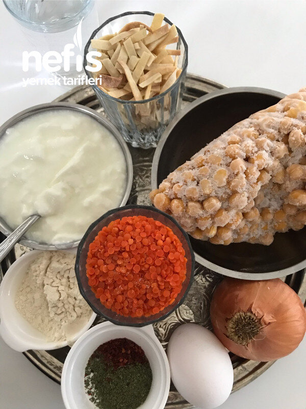

🍽️ 6-8 kişilik⏱️ Hazırlık: 25 dk🔥 Pişirme: 25 dk🏷️ Çorba Tarifleri
Malzemeler
- 1 bardak haşlanmış nohut
- 1 çay bardağı mercimek
- 1 çay bardağı kesme hamur
- 1 bardak et suyu
- Su
- 1 kase yoğurt
- 1 yumurta
- 2 kaşık un
- 1-2 kaşık tereyağı
- 1 soğan
- 1 tatlı kaşığı nane
- Tuz
Hazırlanışı
- 1 litre suyu ve et suyunu tencereye koyarak ocağa alıp kaynatıyoruz. Mercimeği, nohutu ekliyoruz.
- Mercimek yumuşayınca kesme hamuru da ilave ediyoruz.
- Terbiyesi için yoğurt, yumurta ve unu çırpıyoruz.
- Kıvamını ayarlayıp kaynayan çorbaya ilave ederek karıştırıyoruz.
- Sosu için çok ince doğranmış soğanı tereyağında kavuruyoruz.
- Nane ve tuz ilave ediyoruz.
- Çorbamıza karıştırıp kıvamını ayarlıyoruz. Nefis çorbamız hazır. Afiyet olsun 😊.